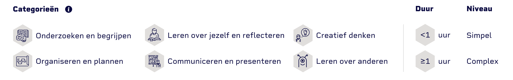

Lijsten
Lijsten

Bij het toepassen van een lijst word er gebruik gemaakt van een
ongeordende lijst, zonder bullets etc. In het voorbeeld is de lijst te zien in een column,
maar voor andere beeldschermen is de lijst onderelkaar te zien.
Let op: Hou je wel aan de typografie regels bij het gebruik van een lijst.
<ul>
<li> Onderzoeken en begrijpen </li>
<li> Organiseren en plannen </li>
<li> Leren over jezelf en reflecteren </li>
<li> Communiceren en presenteren </li>
<li> Creatief denken </li>
<li> Leren over anderen </li>
</ul>
<style>
li {
list-style-type: none;
}
</style>